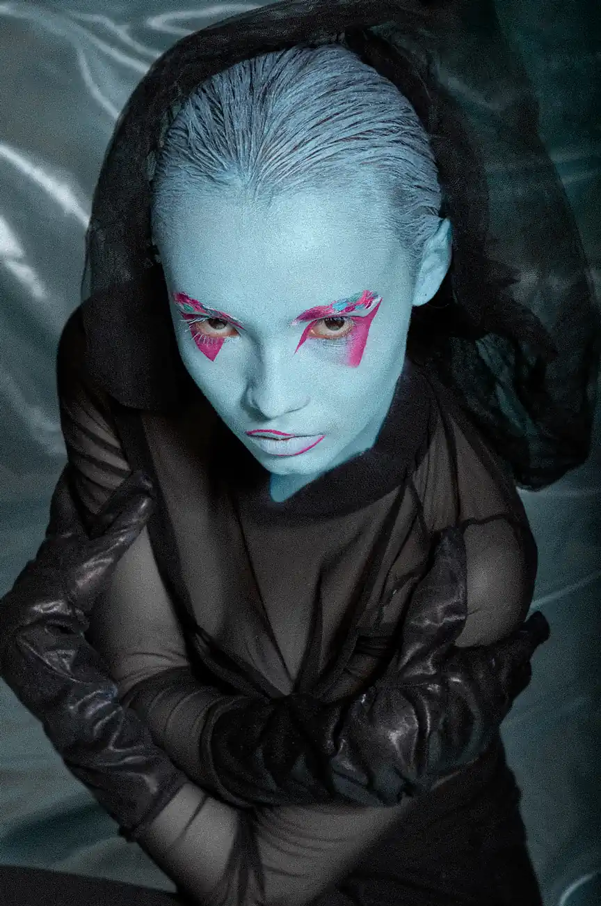
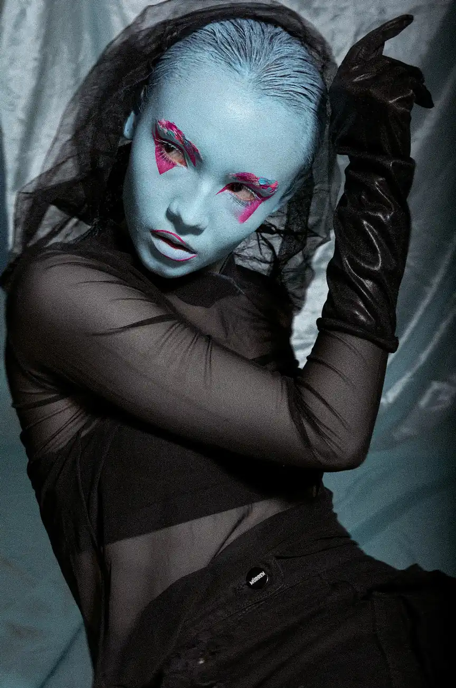
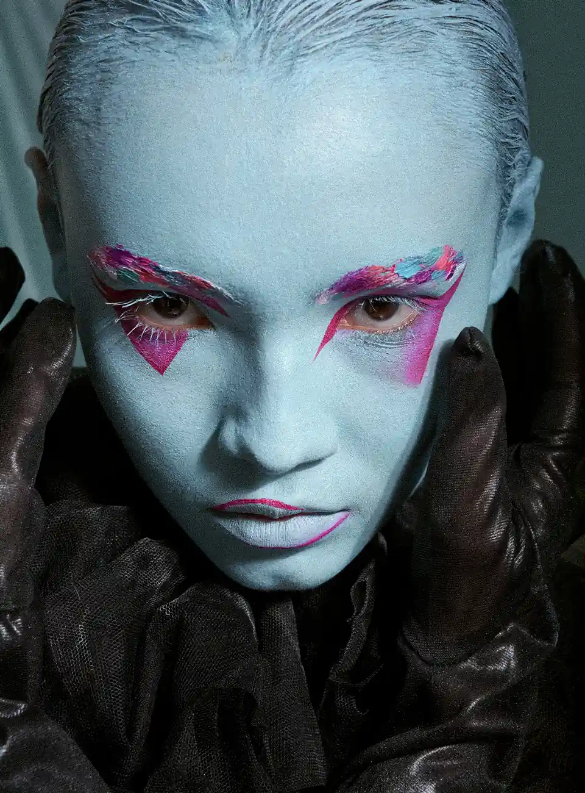
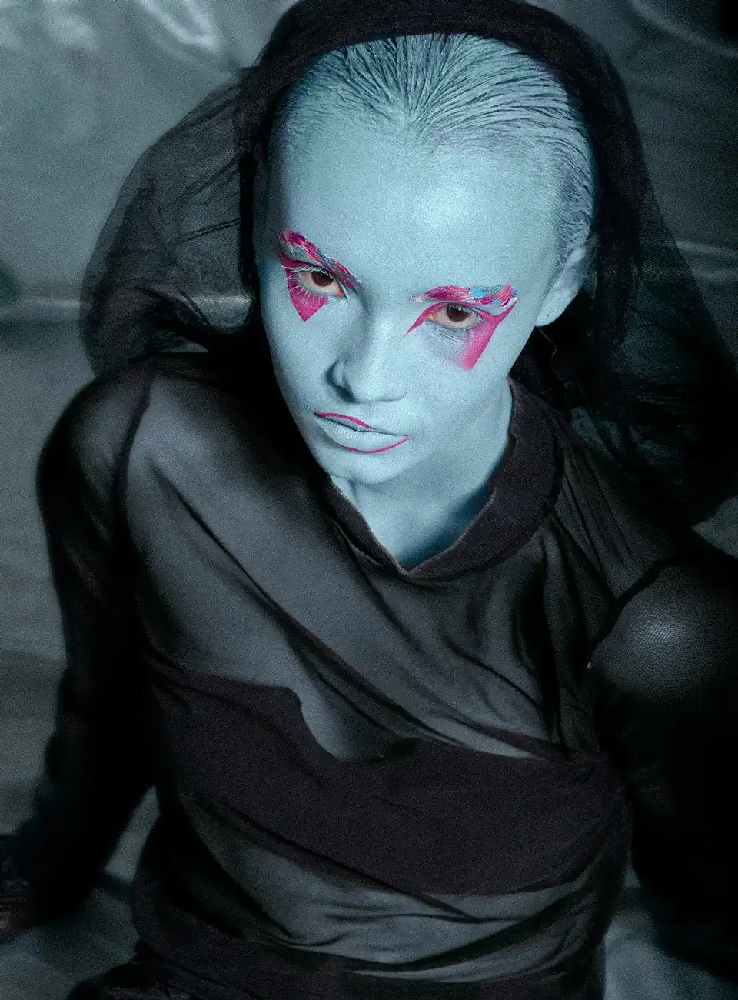

Talvyr
A spectral echo of love and shadow
PORTFOLIO
BEAUTY
Talvyr explores beauty through the macabre — where pale light, hollow gaze and delicate darkness evoke a timeless romance
MODEL: Valeria
MUA: Sofia



